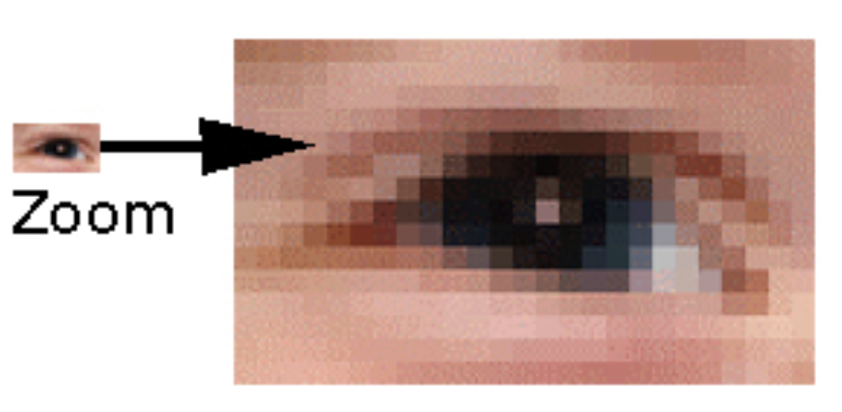

Digital image
What is a digital image?
- A digital image is a two-dimensional function f(x, y).
- x and y are spatial coordinates.
- The amplitude of f is called “intensity level” (shades of gray or color) at the point (x, y).
Pixel
- The digital image is sampled and mapped as a grid of dots or picture elements (pixels).
- To each pixel is assigned a tonal value (black, white, shades of gray or color), which is represented in binary code (zeros and ones).
- As shown in this bitonal image, to each pixel is assigned a tonal value, in this example 0 for black and 1 for white.
Individual pixels can be seen by zooming in an image.
What is the dimension of an image in pixels?
- The pixel dimensions are the horizontal and vertical measurements of an image expressed in pixels.
- The pixel dimensions are determined by multiplying both the width and the height (measured in inch) by the dpi (dots-per-inch).
- An 8" x 10" image, that is scanned at 300 dpi, has the pixel dimensions of 2,400 pixels (8" x 300 dpi) by 3,000 pixels (10" x 300 dpi).